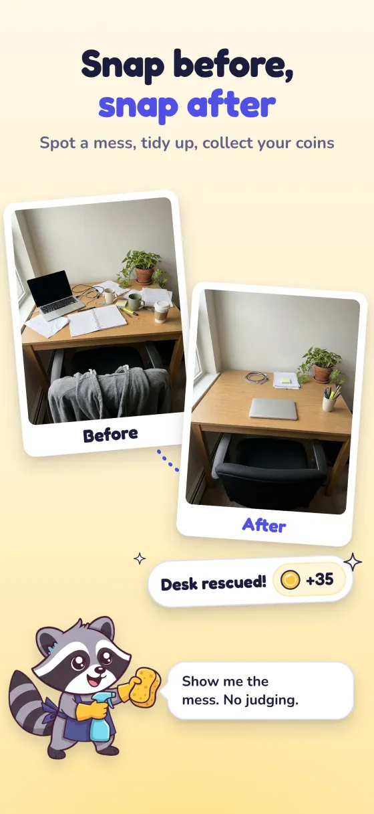

How to get motivated to clean when you feel overwhelmed
The easiest way to get motivated to clean is to stop waiting for motivation and start with one chore that takes about 2 minutes, like making the bed or clearing one chair. Give yourself a visible finish line (one surface, not the whole room), set a short timer, and take a before photo so you can see the change. Starting small often makes it easier to keep going, and if it does not, one finished chore still counts.
Key takeaways
- Do not wait to feel like cleaning. Start with 2 minutes and see how it goes.
- Pick a finish line you can see: one surface, one chair, one sink.
- A timer turns "clean the room" into "clean for 10 minutes", which is easier to begin.
- Pair cleaning with something you enjoy, like a podcast you only play while tidying.
- On low-energy days, lower the bar on purpose. One chore is a win.
Why is it so hard to start cleaning?
A messy room looks like one giant job, and a job with no clear end is hard to begin. The fix is to make the first step so small and so specific that it feels easy: not "clean the bedroom" but "put the clothes from the chair into the closet". The techniques below all work by shrinking the task or making progress visible.
How do I start cleaning a messy room?
- Take a before photo. It takes five seconds, and it gives you something to compare against later.
- Pick one 2 minute chore. Make the bed, or gather all the trash into one bag. Do only that.
- Choose one surface as your finish line. The desk, the nightstand or the chair. Clear it completely.
- Set a timer for 10 minutes. Work on the room until it rings, then decide whether to keep going.
- Take an after photo. Put the two photos side by side. The change is usually bigger than it felt.

What are the best ways to get motivated to clean?
| Technique | How to do it | Best when |
|---|---|---|
| Two minute start | Do one tiny chore, then stop or continue | You cannot make yourself begin |
| Visible finish line | Clear one surface completely | The whole room feels like too much |
| Timer | Clean for 10 or 15 minutes, stop when it rings | You fear it will take all evening |
| Before and after photos | Photo first, photo when done | You feel like nothing changes |
| Pairing | Save a podcast, playlist or show only for cleaning time | Cleaning feels boring |
| Anchor to a routine | Tidy right after something you already do daily | You keep forgetting |
| Small reward | A coffee, a walk or a favorite snack after | You need a reason to finish |
Does pairing cleaning with something fun actually work?
There is some evidence for it. In a study published in Management Science in 2014, researchers let gym members listen to page-turner audiobooks only while at the gym. At first, that group visited the gym 51% more often than a control group, although the effect declined over time, especially after the Thanksgiving holiday. The researchers call this "temptation bundling". For cleaning, it means keeping a favorite podcast or playlist only for tidying time, and expecting it to help most in the first weeks.
How do I make cleaning a habit instead of a struggle?
Tie a small chore to something you already do every day, such as making the bed right after you get up or washing the dishes right after dinner. A review in the British Journal of General Practice advises picking a cue inside an existing daily routine and repeating the action in the same context. The same review notes that missing an occasional day did not seriously hurt habit formation, so one skipped day is not failure. For a full routine built this way, see the daily cleaning routine.
What should I do on low-energy days?
Lower the bar on purpose. Decide ahead of time what the minimum looks like, then let that be enough:
- Make the bed, or just pull the cover straight.
- Put dirty dishes in one place, even if you do not wash them yet.
- Fill one bag with trash and take it out.
- Open a window and clear one small surface.
If you feel stuck for a long time and it goes beyond chores, talking to a professional can help.
Where Rocco fits
Rocco is an iPhone app built around these exact ideas: tiny real chores of about 2 to 5 minutes, a before and after photo for chores like the dishes or a messy chair, and a small reward. Rocco checks each photo and pays coins that furnish a cozy virtual home, so progress you made in real life also shows up somewhere you can see. If you miss 3 days, the virtual room gets a little dusty, nothing is lost, and one chore sweeps it clean. Rocco is a subscription after a 7-day free trial, and every technique on this page works with just a phone camera and a timer. See how Rocco works.
Questions people ask
How do I clean when I feel overwhelmed?
Pick one 2 minute chore and one surface as your finish line, set a 10 minute timer, and stop when it rings. Making the task small and visible is what makes it possible to start.
Where should I start cleaning a messy room?
Start with the bed or the trash, because both take a few minutes and change how the room looks right away. Then clear one surface completely before moving on.
How do I motivate myself to clean when I am tired?
Lower the bar on purpose: do one small chore, like making the bed or taking out one bag of trash, and call it done. A small finished chore keeps the habit going better than a big plan you skip.
Sources
- Milkman KL, Minson JA, Volpp KGM. Holding the Hunger Games hostage at the gym: an evaluation of temptation bundling. Management Science, 2014.
- Gardner B, Lally P, Wardle J. Making health habitual: the psychology of habit-formation and general practice. British Journal of General Practice, 2012.